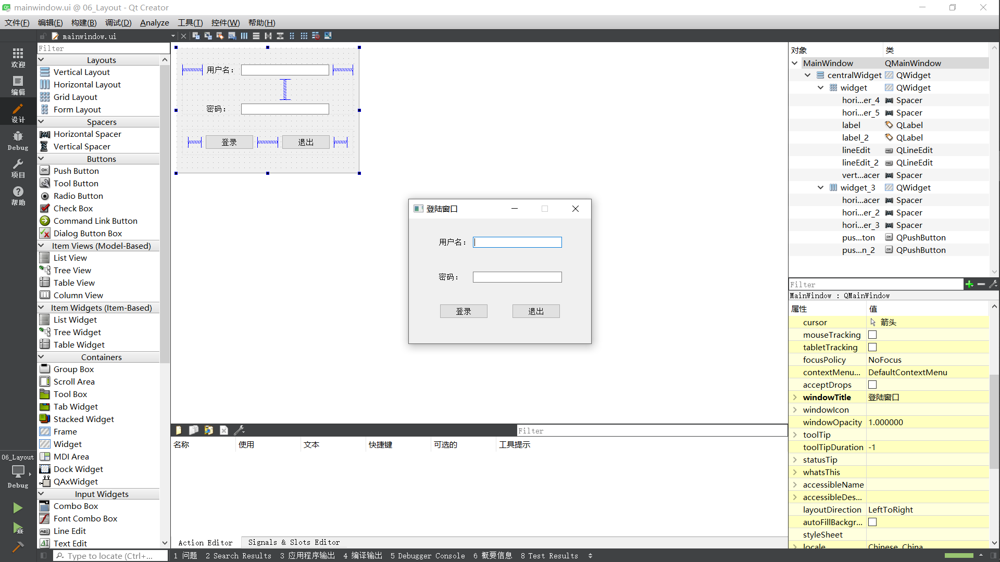
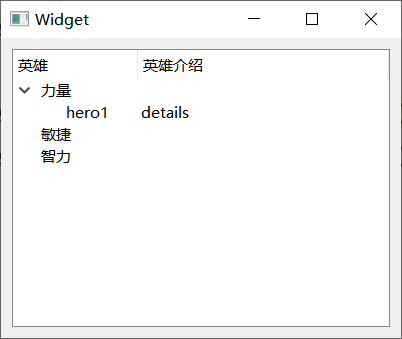

界面布局
界面布局使控件大小和位置能够随窗口大小的变化而自动调整。
“设计”窗口下，使用水平布局Horizontal Layout/竖直布局Vertical Layout使控件对齐。
亦可通过Widget控件内部的水平布局来实现。（更灵活）
使用水平间隔器Horizontal Spacer来控制间隔。
使用栅格布局实现表格式的布局。
Widget属性sizePolicy内的垂直策略设为Fixed可以使控件变为合适的大小。
Layout中控件之间有间隙，可以通过layout(Left/Top/…)Margin属性设置。
QLineEdit控件的echoMode属性可以设置密码输入模式。

按钮组控件
普通按钮。
一般用于显示图片，有多种风格。
单选框。
使用组控件Group Box设定单选框的分组。
1
2
| ui->rBtnMan->setChecked(true);
connect(ui->rBtnMan, &QRadioButton::clicked, ...);
|
CheckBox
多选框，类似单选框。
列表控件。
1
2
3
4
5
6
7
8
9
| QListWidgetItem *item = new QListWidgetItem("锄禾日当午");
ui->listWidget->addItem(item);
QListWidgetItem *item2 = new QListWidgetItem("汗滴禾下土");
ui->listWidget->addItem(item2);
item2->setTextAlignment(Qt::AlignHCenter);
QStringList list;
list << "谁知盘中餐" << "粒粒皆辛苦";
ui->listWidget->addItems(list);
|
树控件。
1
2
3
4
5
6
7
8
9
10
11
12
13
| ui->treeWidget->setHeaderLabels(QStringList() << "英雄" << "英雄介绍");
QTreeWidgetItem *item = new QTreeWidgetItem(QStringList() << "力量");
ui->treeWidget->addTopLevelItem(item);
QTreeWidgetItem *item2 = new QTreeWidgetItem(QStringList() << "敏捷");
QTreeWidgetItem *item3 = new QTreeWidgetItem(QStringList() << "智力");
ui->treeWidget->addTopLevelItem(item2);
ui->treeWidget->addTopLevelItem(item3);
QStringList hero1;
hero1 << "hero1" << "details";
QTreeWidgetItem *l1 = new QTreeWidgetItem(hero1);
item->addChild(l1);
|

表格控件。
1
2
3
4
5
6
7
8
9
10
11
12
13
14
15
16
| ui->tableWidget->setColumnCount(3);
ui->tableWidget->setHorizontalHeaderLabels(QStringList() << "姓名" << "性别" << "年龄");
ui->tableWidget->setRowCount(5);
ui->tableWidget->setItem(0, 0, new QTableWidgetItem("亚瑟"));
QStringList nameList;
nameList << "亚瑟" << "赵云" << "张飞" << "关羽" << "花木兰";
QList<QString> sexList;
sexList << "男" << "男" << "男" << "男" << "女";
for (int i = 0; i < 5; i++) {
int col = 0;
ui->tableWidget->setItem(i, col++, new QTableWidgetItem(nameList[i]));
ui->tableWidget->setItem(i, col++, new QTableWidgetItem(sexList.at(i)));
ui->tableWidget->setItem(i, col++, new QTableWidgetItem(QString::number(i + 18)));
}
|
其他常用控件
滚动控件。
选项卡式抽屉控件。
网页选项卡式控件。
提供多页面切换的栈控件（一般通过另外的按钮等控件实现切换）
1
2
3
4
5
6
7
| connect(ui->btn_1, &QPushButton::clicked, [=](){
ui->stackedWidget->setCurrentIndex(0);
});
connect(ui->btn_2, &QPushButton::clicked, [=](){
ui->stackedWidget->setCurrentIndex(1);
});
|
ComboBox
下拉框。
1
2
3
| ui->comboBox->addItem("奔驰");
ui->comboBox->addItem("宝马");
ui->comboBox->addItem("自行车");
|
FontComboBox
字体下拉框。
LineEdit
单行输入框。
TextEdit/PlainTextEdit
多行输入框/纯文本输入框。
SpinBox/DoubleSpinBox
整数/实数显示控件。
TimeEdit/DateEdit
时间/日期显示控件
水平/竖直滚动条。
HorizontalSlider/VerticalSlider
另一种形式的水平/竖直滑动条。
Label
标签。也可以显示图片。